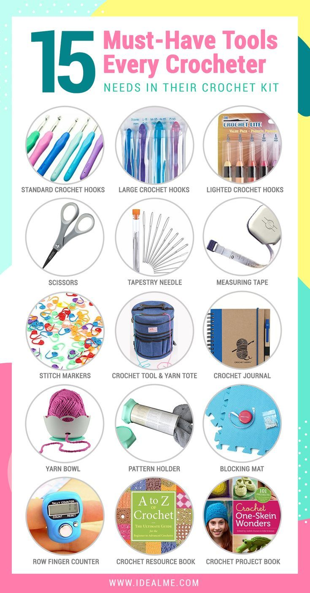

Start Simple
You do not need every item on this list to start crocheting today. Many of these tools will simply become helpful as your crochet journey grows. The three main things you need are yarn, a crochet hook, and a little patience. Everything else can be added along the way.
